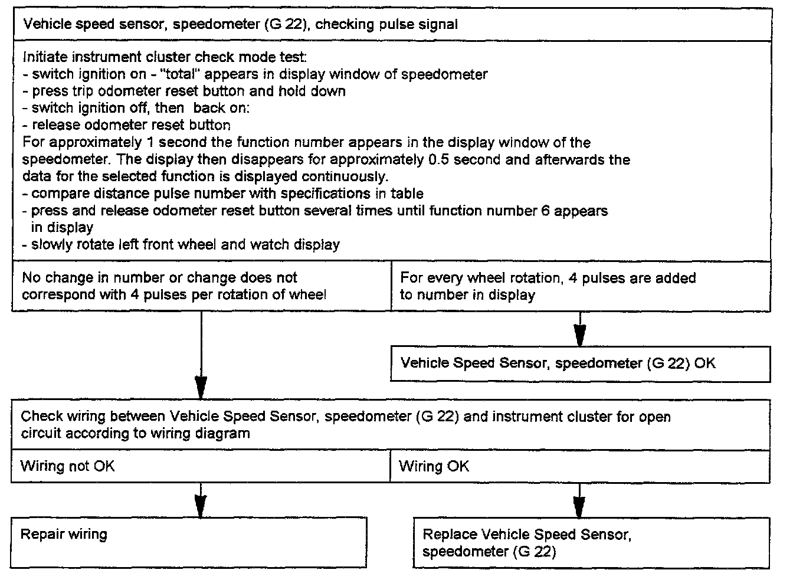

Vehicle Speed Sensor, Speedometer (G 22), Checking

Tools required:
- Multimeter Fluke 83
- Connector test kit VW 1594
- Test box VAG 1598 with adapter harness VAG 1598/8
Test conditions: Distance pulse number and country code OK, see "Calling up instrument cluster check mode test".